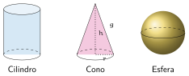

Apartado 11.2
Cuerpos de revolución
Los cuerpos de revolución se obtienen al girar una figura plana alrededor de un eje.
- El cilindro se obtiene al girar un rectángulo alrededor de uno de sus lados.
- El cono se obtiene al girar un triángulo rectángulo alrededor de un cateto. La generatriz \(g\) es la hipotenusa: \(g^2=h^2+r^2\).
- La esfera se obtiene al girar un semicírculo alrededor de su diámetro.

11.2.1
Un rectángulo de 3 cm por 5 cm gira alrededor de su lado mayor. ¿Qué cuerpo se obtiene? ¿Cuánto miden su radio y su altura? ¿Y si gira alrededor del lado menor? Un triángulo rectángulo de catetos 6 cm y 8 cm gira alrededor del cateto de 8 cm: ¿cuánto mide la generatriz del cono?